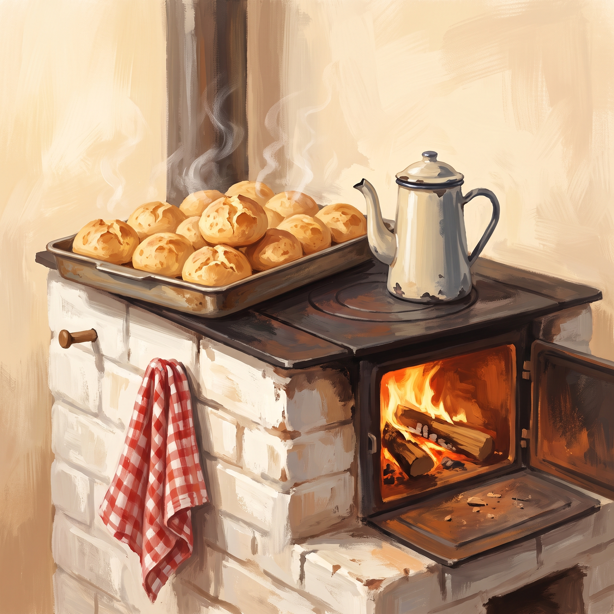
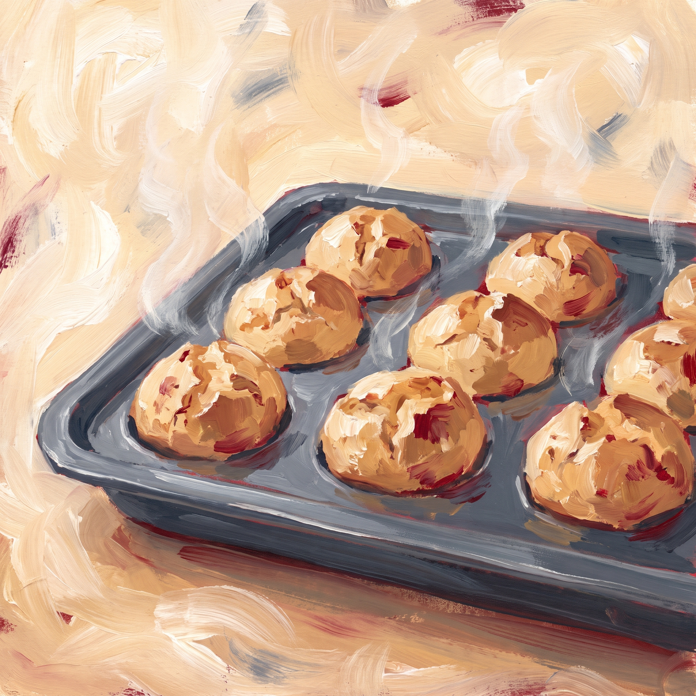
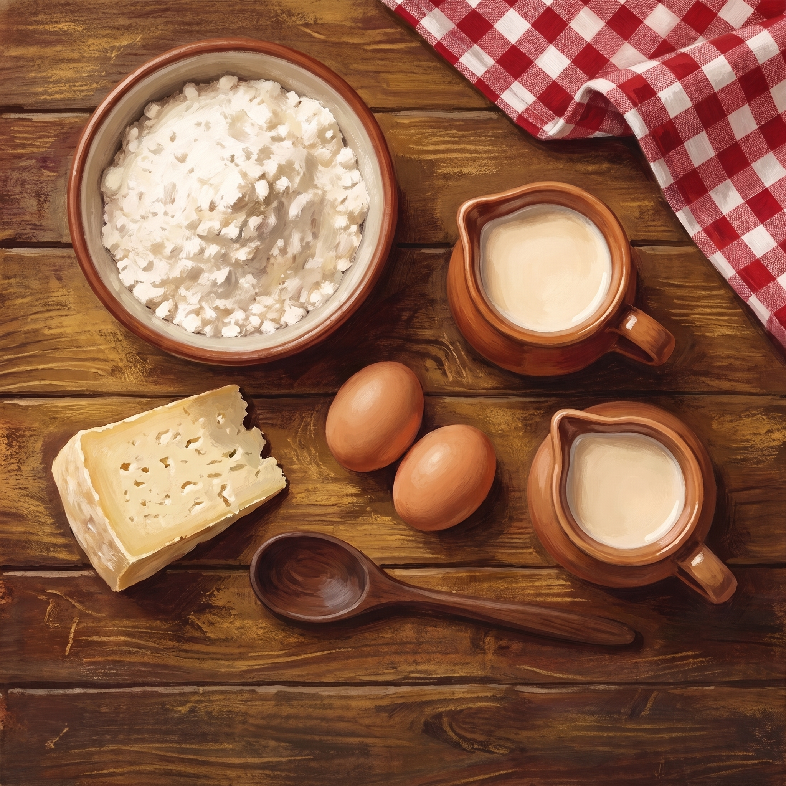
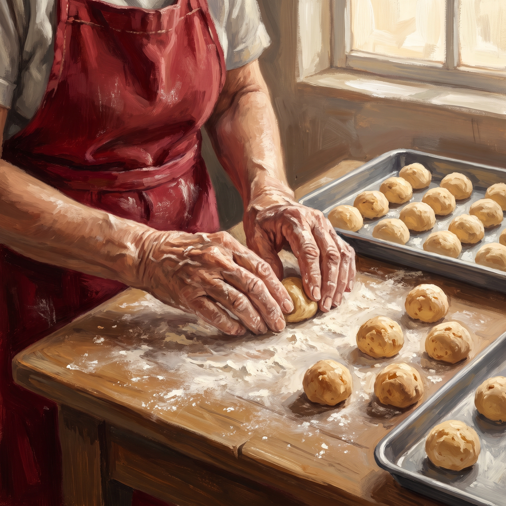
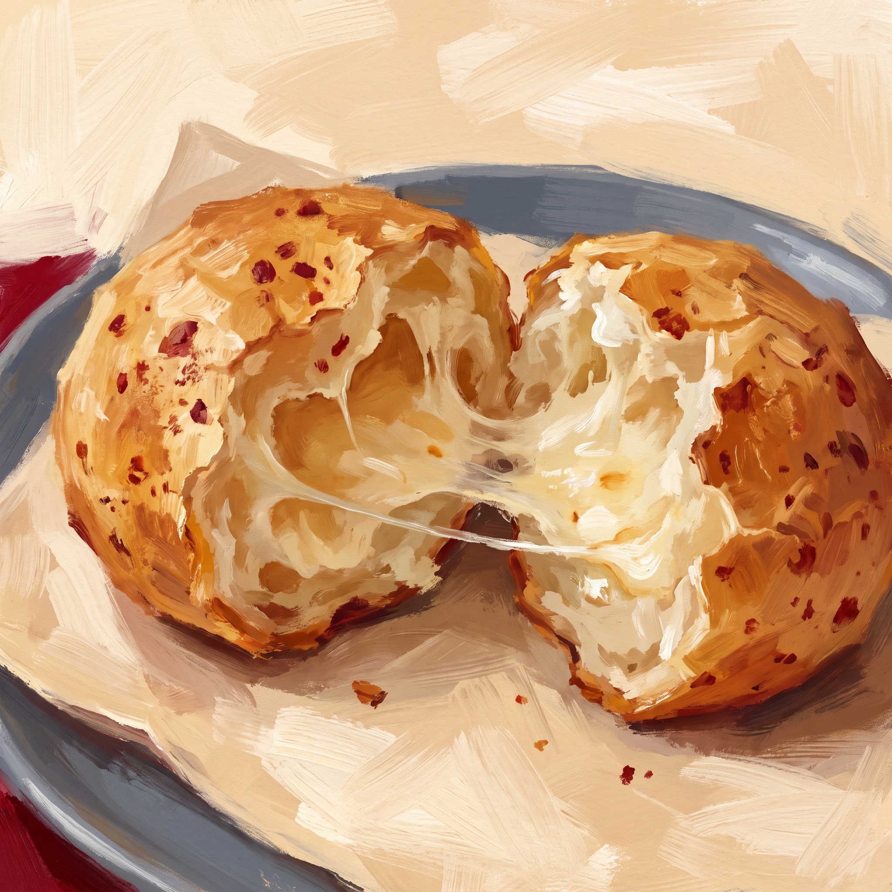
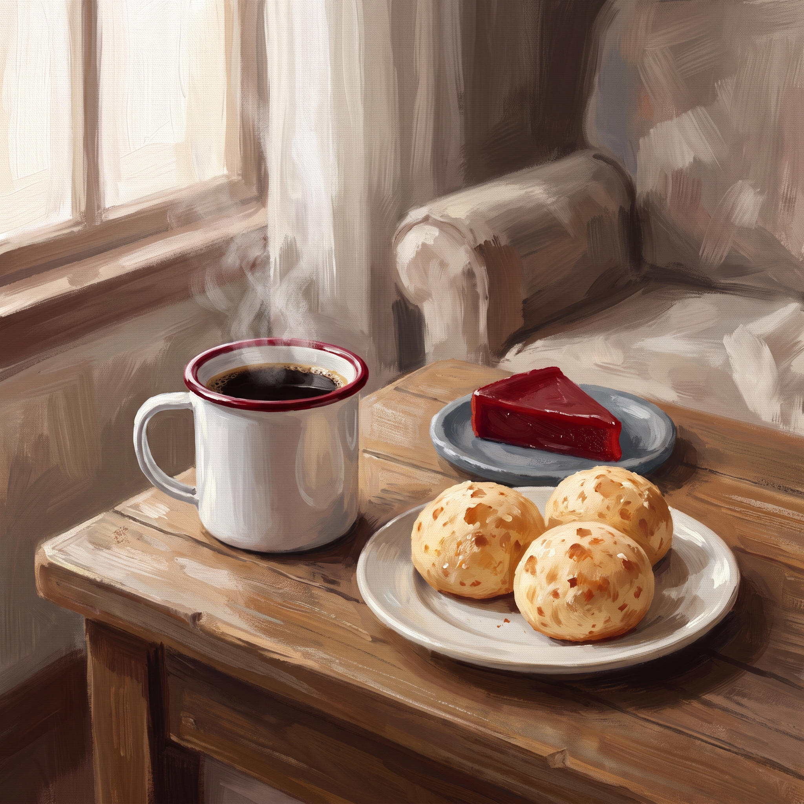

Pão de Queijo da Vovó
Quentinho, crocante por fora e macio por dentro. Cada fornada leva a receita que passou de geração em geração na nossa família, feita com queijo minas curado e muito carinho. Conte com a gente para deixar o seu café da tarde com gostinho de casa de vó.
Sobre
Tudo começou na cozinha da Vovó Maria, no interior de Minas Gerais. Nas tardes de domingo, a casa enchia de netos atraídos pelo cheirinho do pão de queijo saindo do forno. Anos depois, decidimos dividir essa receita com todo mundo, sem mudar nada do jeito que ela fazia.
Receita
Essa é a receita que a Vovó preparava nas tardes de domingo. Não tem segredo complicado: ingredientes bons, mãos na massa e um forno bem quente. Agora é a sua vez de fazer em casa.
Galeria de Fotos





